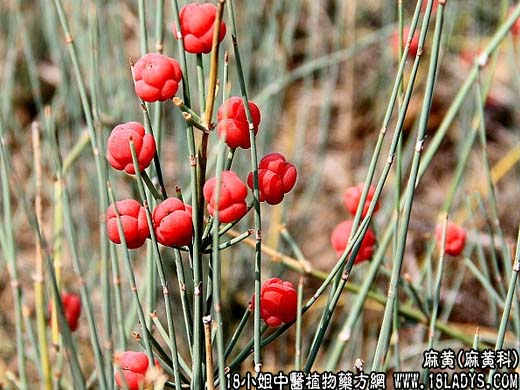

【中药概述】
麻黄为麻黄科小灌木草麻黄、木贼麻黄的茎枝。辛、微苦，温。归肺、膀胱经。
1．发汗解表：用于外感风寒，恶寒、发热、无汗的表实证常与桂枝相须为用，以增强发汗散寒解表的力量，如（<伤寒论>麻黄汤）。
2．宣肺平喘：用于风寒外束，肺气壅闭之喘咳实证，既可宣泄肺气以平喘，又能发汗解表而散寒与杏仁 甘草配伍，可增强平喘止咳功效，如（<和剂局方>三拗汤）；若属热邪壅肺而致喘咳者，如（<伤寒论>麻杏石甘汤）。
3．利水消肿：用于水肿小便不利而兼有风寒表证者，肺气开宣，又有助于水道之通调，如（<金匮要略>越婢加术汤）。
【药效鉴别】
麻黄入气分。生用发散作用较强，水炙发散作用较缓，蜜炙发散作用减弱而善于润肺平喘。
【临证应用】
1.外感风寒表证实证，若阳虚（如体虚及心脏衰弱病人）外感风寒，恶寒重，微热，脉沉细，可配黄芪，党参，附子，细辛扶阳解表；配薄荷，荆芥，金银花，连翘，大青叶等，则
有抑制病毒及疏散风热之功；
2.寒痹（如类风湿性关节炎、肌肉风湿等），肌肉及关节疼痛遇寒加剧，配桂枝，乌头，细辛，防风等。
【药理作用】
1．平喘作用：麻黄碱对支气管平滑肌有松驰作用，对于用药（如毛果芸香碱）引起的支气管痉挛有显著解挛作用。伪麻黄碱与麻黄碱的解痉作用相似。甲基麻黄碱可使支气管扩张。
2．镇咳作用：麻黄水溶液提取物对豚鼠气管机械刺激所致咳嗽有明显的镇咳作用，约相当于磷酸可待因1／20的效果。
3．对心血管系统的作用：麻黄碱能使外周血管收缩，心收缩力加强，心搏出量增加，血压升高。伪麻黄碱的升压作用较弱。
4．发汗作用：大鼠口服水溶性提取物在75～300mg／Kg的范围内其足底部的水份散发（发汗）呈现剂量依赖性发汗作用。
5．对大脑，脑干与脊髓均有兴奋作用，大剂量可引起失眠、不安和震颤。
此外，麻黄还有利尿、抗变态反应、抗炎、解热、抗病。
【化学成分】
含麻黄碱、伪订黄碱、去甲基麻黄碱、甲基麻黄碱，挥发油。芹菜素、小麦黄素、山奈酚等。
【用量用法】
2——10g，水煎服。
【使用注意】
对表虚自汗、阴虚盗汗及肾不纳气的咳喘，均忌用。
蜜炙麻黄：甘、微苦，温偏润，辛散发汗作用缓和，并与止咳平喘的功效起协同作用从而增强其宣肺平喘止咳和效力，多用于表症较轻、肺气壅阻、咳嗽气喘的患者。风寒咳喘，常与杏仁，甘草同用；痰饮咳喘，常与干姜，细辛同用；痰热咳喘，常与石膏同用。如<小青龙汤>。
麻黄去残根，并予去节。
【药效鉴别】
炙麻黄辛散作用减弱，发汗力小，而润肺平喘止咳的效果增加。